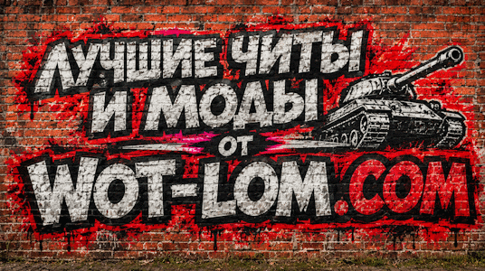

Поддержка проекта
Помогите автору в развитии и обновлении модпака
Портал читерских сборок и модификаций

Помогите автору в развитии и обновлении модпака
Добро пожаловать на официальное зеркало WoT-Lom. Здесь собраны самые эффективные, проверенные и актуальные модификации и читы для танковых баталий.
В наших сборках доступны легендарные аимботы (Ванга, Шайтан, Сае), удаление растительности (Тундра), таймеры перезарядки, подсветка контуров сквозь препятствия, маркеры направления стволов противников и утилиты оптимизации FPS (WoT Tweaker).
Выберите нужный раздел в меню выше, чтобы перейти к описанию и загрузке интересующей сборки.